JM-Orgue
JM-Orgue est un orgue à tuyaux virtuel pour Windows, macOS et Linux. Le programme joue directement les jeux d’échantillons Hauptwerk et GrandOrgue, y compris les grands jeux surround, et se joue avec un clavier MIDI, une console d’orgue ou la souris. Ce manuel parcourt le programme à l’aide de captures d’écran de la version 0.8.98.
© Martijn van der Kolk. Les captures d’écran ont été réalisées avec des orgues de démonstration et des jeux de test personnels ; les adresses réseau, les jetons d’accès et les dossiers d’utilisateur ont été rendus illisibles.
1. Pour commencer
Installer
Téléchargez le programme d’installation de la dernière version sur la page des versions du projet (pour Windows JM-Orgue_<version>_x64-setup.exe) et lancez-le. L’installation se fait par utilisateur et ne demande pas de droits d’administrateur. Il existe aussi un paquet MSI pour Windows, un DMG pour macOS et un AppImage ou deb pour Linux.
Le programme lui-même est libre d’utilisation. Les jeux d’échantillons ne sont pas fournis : vous les obtenez auprès de leurs auteurs. La page d’accueil de la bibliothèque mentionne quelques auteurs qui proposent des jeux gratuitement.
Mettre à jour
JM-Orgue vérifie lui-même si une nouvelle version existe. Si c’est le cas, un message apparaît en haut. Choisissez Mettre à jour : le programme télécharge la mise à jour, vérifie la signature, installe et redémarre. Si vous voulez d’abord seulement télécharger, choisissez Télécharger. Vous pouvez aussi vérifier à la main via Paramètres généraux → Mise à jour et retour → Vérifier les mises à jour.
Les trois écrans principaux
En haut se trouvent trois onglets : Orgue (jouer), Paramètres d’orgue (tout ce qui concerne l’orgue chargé) et Paramètres généraux (tout ce qui concerne l’ensemble du programme). F1, F2 et F3 permettent de passer directement de l’un à l’autre. La croix à côté du nom de l’orgue ferme l’orgue et vous ramène à la bibliothèque.
2. La bibliothèque
Au démarrage, vous voyez la bibliothèque d’orgues : une carte par orgue avec photo, nom, facteur, lieu et nombre de jeux. Cliquez sur une carte pour charger l’orgue.
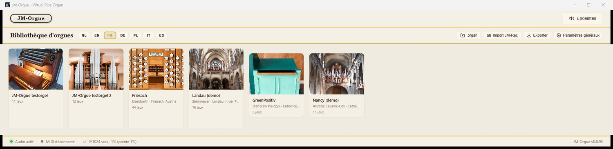
Ajouter un orgue
- .organ : choisissez une définition d’orgue (GrandOrgue
.organou définition Hauptwerk). Vous choisissez le fichier de définition, et non le dossier d’échantillons : seule la définition connaît les jeux, accouplements, trémulants et éventuelles positions d’enregistrement supplémentaires. - JM-Rec import : importe un jeu d’échantillons créé avec JM-Rec.
- Exporter : transforme un dossier d’échantillons en définition d’orgue (
.organ), que vous pouvez ensuite charger avec le bouton .organ.
Boutons de la carte : photo, recherche, suppression
Lorsque vous pointez une carte, trois boutons apparaissent en haut à droite de la photo : chercher une photo en ligne (globe), choisir soi-même une image (appareil photo) et retirer de la bibliothèque (croix). Retirer ne fait que supprimer la carte de la bibliothèque ; les fichiers restent sur votre disque. Si vous maintenez une carte enfoncée 3 secondes, le programme cherche de nouveau la photo.
La recherche en ligne affiche quelques photos librement utilisables de Wikimedia Commons, d’après le nom, le facteur et le lieu indiqués dans le jeu. Cliquez sur une photo pour la reprendre ; la source et la licence s’affichent sous la carte. Si le jeu contient trop peu d’informations pour trouver quelque chose, saisissez vous-même un terme de recherche (église, ville ou nom de l’orgue) dans le champ en haut de la fenêtre et choisissez Rechercher.
3. Charger et jouer un orgue
Chargement
Au chargement, JM-Orgue lit en mémoire le début de chaque enregistrement de tuyau ; le reste est chargé pendant que vous jouez. Un grand jeu surround peut donc prendre un moment ; la barre de progression indique où l’on en est.
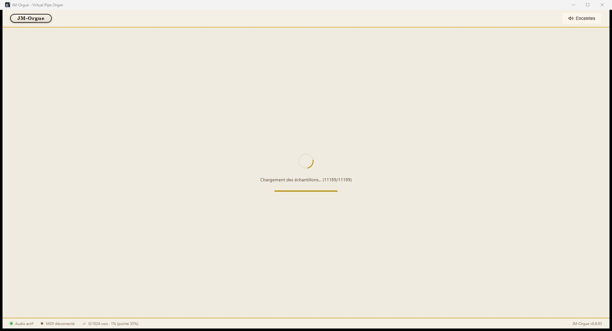
La soufflerie
Après le chargement, la soufflerie de l’orgue est en marche par défaut dès que le jeu contient un enregistrement de soufflerie, et un léger vent se fait entendre tout de suite. Pour travailler en silence sans ce bruit de vent, désactivez le bouton Soufflerie dans la barre d’outils ; la barre jaune n’apparaît que lorsque la soufflerie est vraiment arrêtée. Les bruits annexes activés par défaut et leur volume se règlent dans la barre d’outils avec le petit mélangeur situé à côté du bouton des bruits annexes.
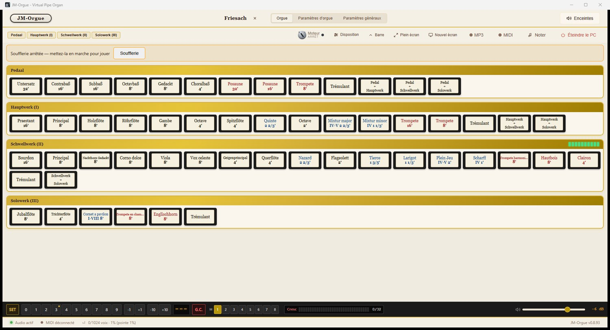
Jeux, accouplements et trémulants
Chaque clavier a son propre cadre avec ses jeux. Cliquez sur un bouton de jeu pour le tirer ; les jeux tirés deviennent jaunes. La couleur du nom indique la famille : les anches sont par exemple en rouge, les mixtures et quintes en bleu. Chaque cadre contient aussi le trémulant et les accouplements (par exemple « Hauptwerk + Schwellwerk »). Une barre verte à droite de l’en-tête d’un clavier indique la position de la boîte expressive.
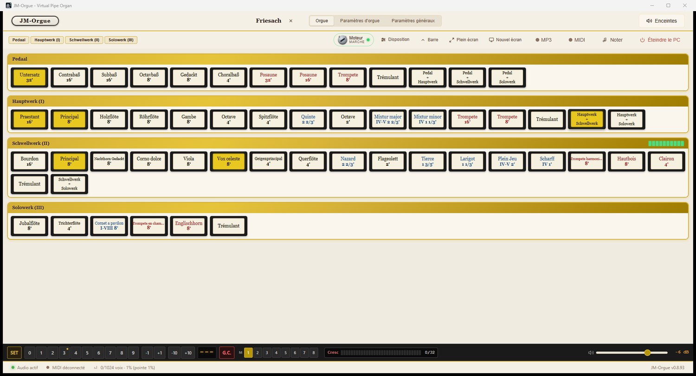
La barre du setzer
En bas se trouve la barre du setzer, avec les commandes d’une console d’orgue :
| Élément | Fonctionnement |
|---|---|
| SET et 0–9 | Appuyez sur SET puis sur un chiffre pour mémoriser la registration actuelle ; appuyez seulement sur le chiffre pour la rappeler. Un petit point sur un chiffre indique qu’une registration y est enregistrée. |
| −1 / +1, −10 / +10 | Passe à la registration précédente ou suivante, ou avance de dix. |
| G.C. | General Cancel : tous les jeux rentrés. |
| M 1–8 | Niveaux de mémoire : huit banques de registrations distinctes. |
| Cresc | Le crescendo général (voir le chapitre 7). La barre indique le cran actuel. |
| Curseur de volume | Volume principal. Un double-clic le remet à la valeur par défaut ; la molette le modifie par pas de 1 dB. |
Chaque bouton de la barre du setzer peut être associé à un bouton de votre propre console : faites un clic droit (ou maintenez 3 secondes), puis appuyez sur le bouton de votre console.
Apprendre le canal MIDI d’un clavier
Pas besoin de passer d’abord par les Paramètres d’orgue : cliquez avec le bouton droit sur le nom d’un plan de jeu au-dessus des jeux — ou maintenez-le 2 secondes sur un écran tactile — et le programme demande la note la plus grave et la plus aiguë de ce clavier. Le canal est réglé sans quitter la console.
4. La barre d’outils
Au-dessus des jeux se trouve la barre d’outils. À gauche, les claviers (Pédale, Hauptwerk, …) sont des boutons : ils permettent d’afficher ou de masquer un clavier. À droite se trouvent les fonctions ci-dessous.
| Bouton | Fonction |
|---|---|
| Soufflerie | Met la soufflerie en marche ou l’arrête. |
| Disposition | Ouvre le menu de disposition (voir ci-dessous). |
| Barre | Affiche ou masque la barre principale avec les onglets et le bouton de profil. |
| Plein écran | Mode console : seulement les jeux et la barre du setzer (F11). |
| Nouvel écran | Ouvre une fenêtre supplémentaire avec les mêmes jeux, par exemple pour un deuxième moniteur ou un deuxième clavier. |
| MP3 | Enregistre ce que vous entendez. L’enregistrement va dans Documents\JM-Orgue-opnames. Cliquez sur le compteur rouge pour arrêter ; le programme indique ensuite où se trouve le fichier. |
| MIDI | Enregistre ce que vous jouez (notes uniquement) dans un fichier .mid. Cliquez sur le compteur bleu pour arrêter et choisissez où l’enregistrer. |
| Noter | Ouvre la fenêtre de notation : les notes apparaissent pendant que vous jouez, avec couches, overdub et édition. Un fichier MIDI existant peut aussi y être ouvert. |
| Éteindre le PC | Ferme le logiciel et l’ordinateur, après confirmation ; le dernier état est d’abord enregistré. Un clic droit ou 3 secondes de pression associe le bouton à un bouton de votre console. |
Le menu de disposition
Avec Disposition, vous adaptez l’affichage à votre écran : Ajuster calcule la taille des boutons pour que tous les jeux tiennent à l’écran, les boutons moins/plus modifient la largeur et la hauteur des boutons, et vous choisissez en outre les claviers l’un sous l’autre ou côte à côte (vertical), des boutons ronds plutôt que rectangulaires et l’emplacement des accouplements (dans le clavier ou dans une barre à part). Le choix est mémorisé par orgue.
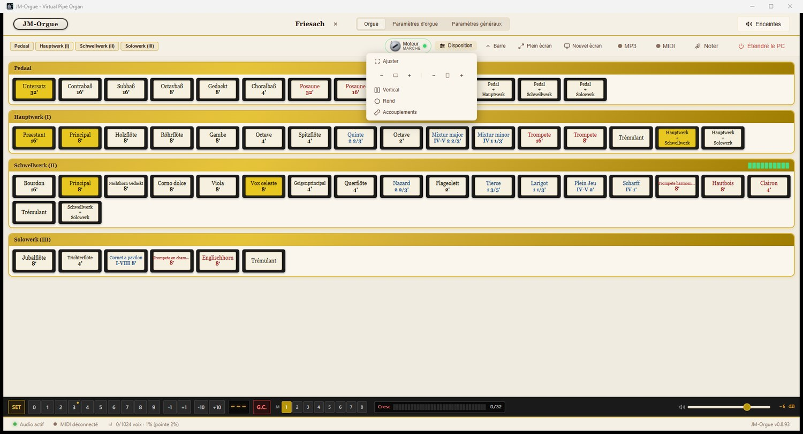
Plein écran (mode console)
Dans ce mode, la barre de titre, la barre des tâches de Windows et la barre principale disparaissent : vous ne voyez que les jeux et la barre du setzer. En haut, une étroite bande comporte quatre boutons : Barres (rappeler temporairement la barre principale), Soufflerie (marche ou arrêt), Quitter le plein écran et Éteindre le PC (fermer le logiciel et l’ordinateur). F11 active et désactive le mode ; Échap le désactive.
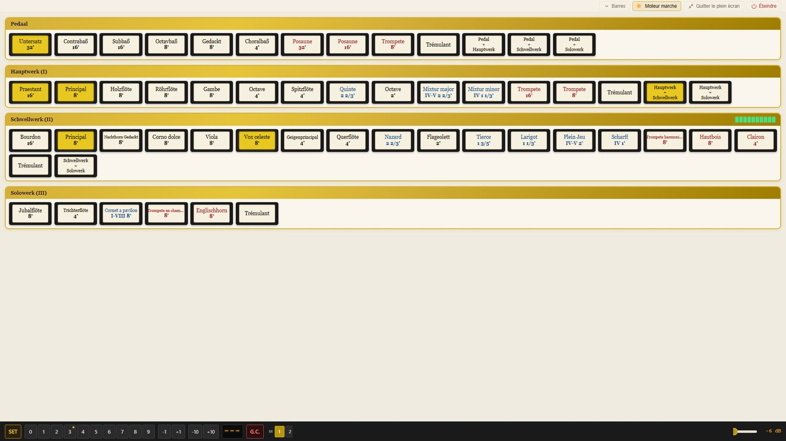
Un deuxième écran
Nouvel écran ouvre une fenêtre à part que vous pouvez faire glisser vers un autre moniteur ou laisser en petit format à côté de la fenêtre principale. Elle a ses propres réglages de disposition : si les boutons sont trop petits, choisissez Disposition et réglez la largeur et la hauteur des boutons, ou choisissez les claviers l’un sous l’autre ou côte à côte.
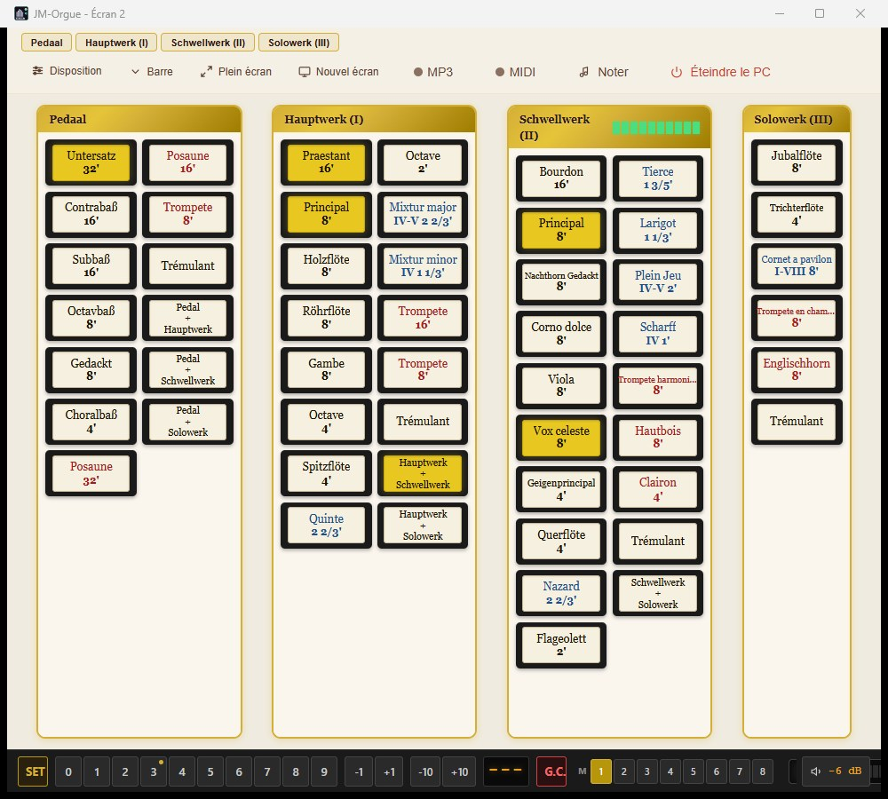
5. Plusieurs positions d’écoute
Certains jeux d’échantillons ont été enregistrés à plusieurs endroits de l’église, par exemple tout près, devant, à mi-distance et au fond. Un tel jeu affiche dans la barre d’outils les boutons Perspective, un par position. Cliquez sur une position pour l’activer ou la désactiver ; vous pouvez en faire sonner plusieurs à la fois. À droite se trouve la position d’écoute : le curseur entre « console » et « au fond » fait un fondu enchaîné progressif entre les positions enregistrées.
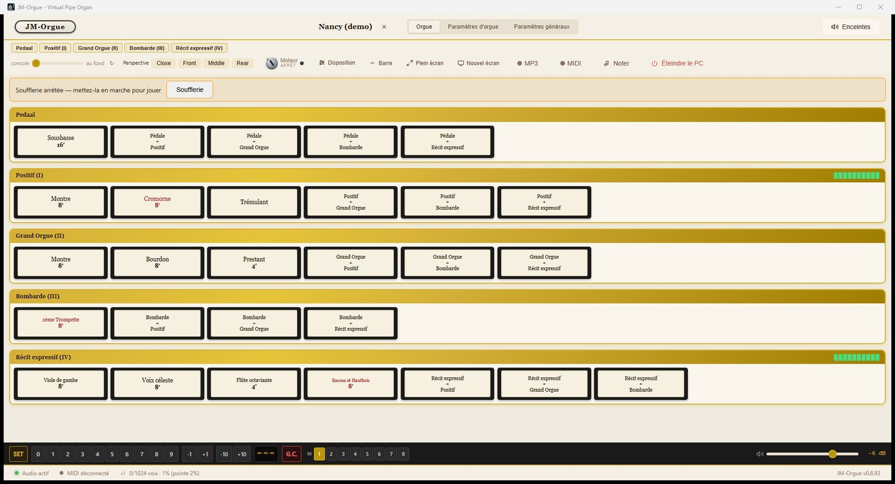
6. L’assistant pour un nouvel orgue
Quand vous chargez un orgue pour la première fois, l’assistant « Configurer l’orgue » démarre automatiquement. En six étapes, il passe en revue tout ce que vous devez relier à votre propre console. Tout peut être modifié plus tard, et vous pouvez relancer l’assistant via Paramètres d’orgue → Routage → Assistant. Plus tard ferme l’assistant et le propose à nouveau à la prochaine ouverture ; Ignorer (étape 1) l’ignore complètement.
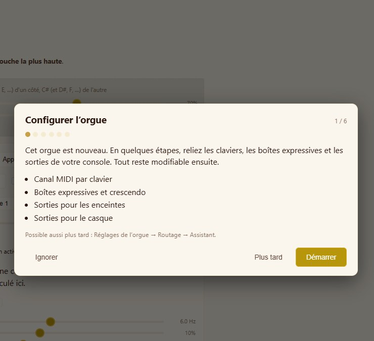
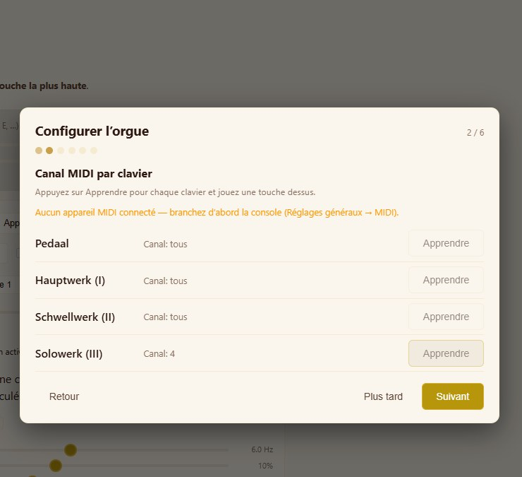
- Démarrer : un aperçu des étapes.
- Canal MIDI par clavier : pour chaque clavier, choisissez Apprendre et jouez une touche de ce clavier. Le programme retient le canal. Les boutons ne fonctionnent que si un appareil MIDI est connecté (Paramètres généraux → MIDI) ; sinon un avertissement s’affiche.
- Boîtes expressives et crescendo : choisissez Apprendre et déplacez la pédale complètement fermée puis complètement ouverte. Il en va de même pour le crescendo général. Si un jeu a des boîtes expressives par rang (chapitre 9), elles apparaissent aussi ici.
- Sorties pour les enceintes : choisissez le pilote et l’appareil, enregistrez-les comme profil « Enceintes » et choisissez pour chaque clavier les sorties de votre interface audio sur lesquelles il sonne. En dessous figurent les mêmes choix pour le bruit de soufflerie, le bruit d’ambiance et les clics de mécanique, les jeux d’effet et le bruit de trémulant, dans la mesure où le jeu les contient.
- Sorties pour le casque : la même chose pour le second profil, par exemple une sortie casque. Dès lors, vous basculez entre les deux profils avec le bouton Enceintes en haut à droite.
- Terminé : les réglages sont enregistrés avec cet orgue.
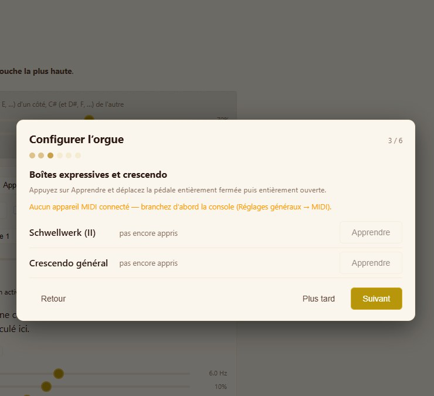
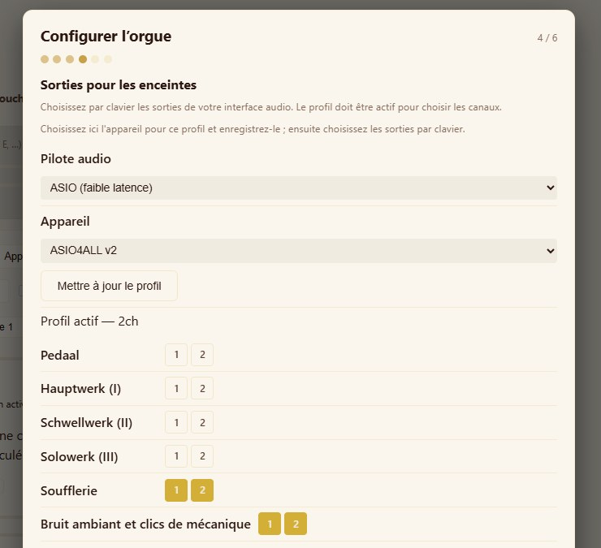
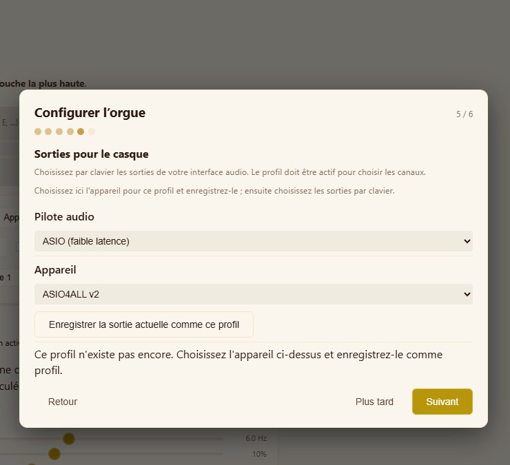
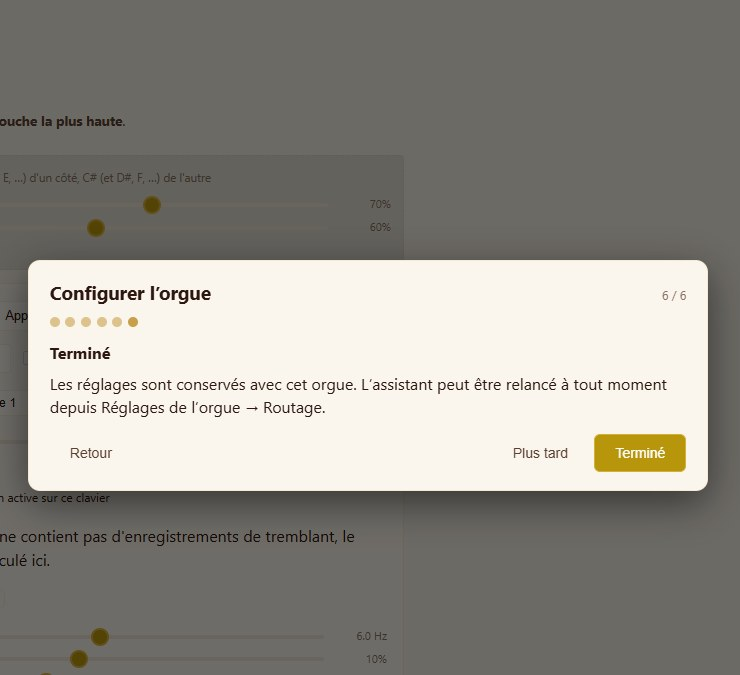
7. Paramètres d’orgue
Tous les réglages propres à l’orgue chargé sont enregistrés avec cet orgue. En haut se trouvent cinq onglets : Son, Crescendo, Ordre des jeux, Routage et Tout ; ce dernier place tous les blocs les uns sous les autres.
Son
Le premier bloc contient les réglages principaux :
- Volume : le volume principal de cet orgue.
- Tempérament : « Original » joue les tuyaux tels qu’ils ont été enregistrés. Les autres tempéraments (égal et tempéraments historiques) réaccordent les tuyaux d’après la hauteur mesurée de chaque enregistrement. Sous le choix, vous voyez combien de tuyaux ont une hauteur mesurée. Avec Tempérament personnalisé…, vous réglez vous-même l’écart par note en cents.
- Accord fin : l’ensemble plus haut ou plus bas, en cents.
Réverbération règle la réverbération. Si le jeu a déjà l’acoustique de l’église dans ses enregistrements, cela est indiqué (avec un bouton Revenir à l’enregistrement (réverbération coupée) pour couper la réverbération supplémentaire) : une réverbération supplémentaire est alors une question de goût. Vous choisissez entre Algorithmique (une réverbération calculée avec RT60, délai, amortissement et taille de la salle, aussi sous forme de préréglage) et Réponse Impulsionnelle avec une réponse impulsionnelle (IR) personnelle. Avec Mix, vous déterminez la quantité de réverbération entendue.
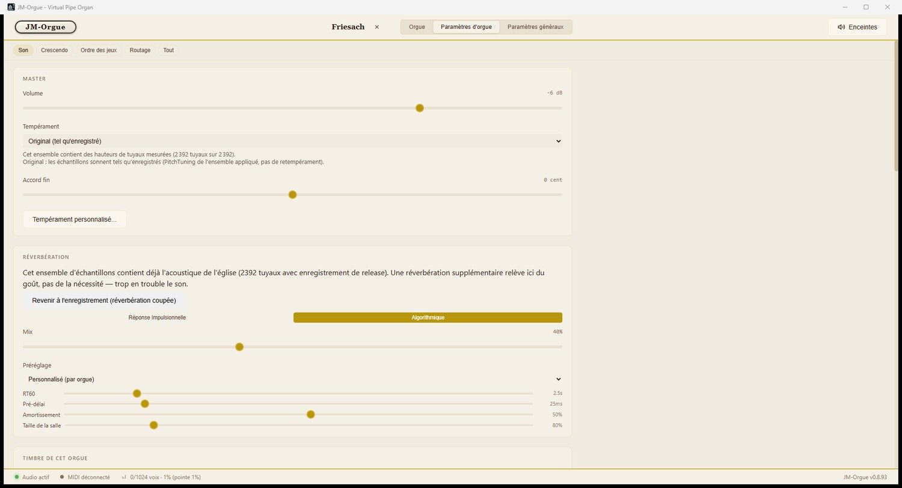
Timbre de cet orgue est une correction de timbre propre à chaque orgue ; la correction pour votre casque ou vos enceintes est distincte, dans les paramètres généraux. Le modèle de vent fait respirer l’orgue : un accord avec beaucoup de jeux fait baisser la pression du vent, comme dans un vrai orgue, et les flûtes et les anches y réagissent différemment. Vous choisissez le nombre de groupes de vent (quels claviers partagent le même soufflet) et, par groupe, la taille du soufflet, l’amortissement, la baisse de pression maximale et le caractère du vent.
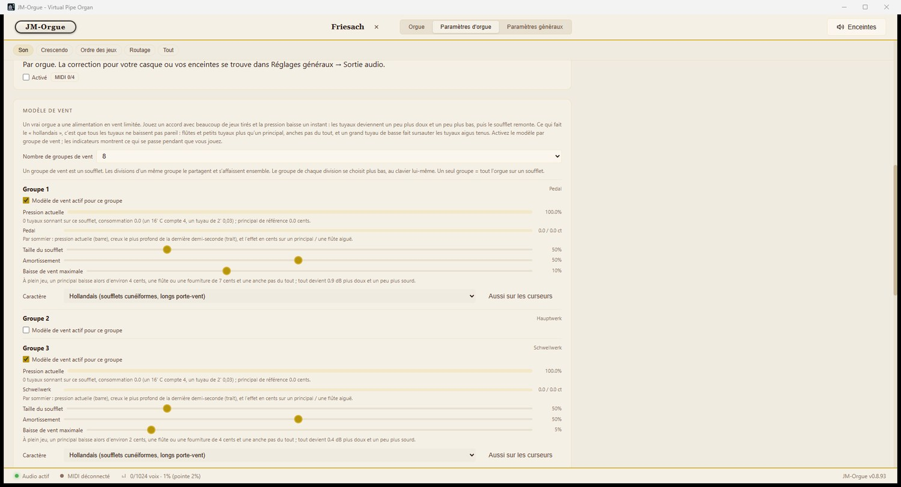
Bruits montre les sons continus que contient le jeu, comme la soufflerie et le bruit de la salle. Vous réglez le volume, mettez la soufflerie en marche ou l’arrêtez, et pouvez activer la mécanique du clavier (clic des touches). La mécanique du clavier est désactivée par défaut car elle consomme beaucoup de mémoire et demande de recharger l’orgue.
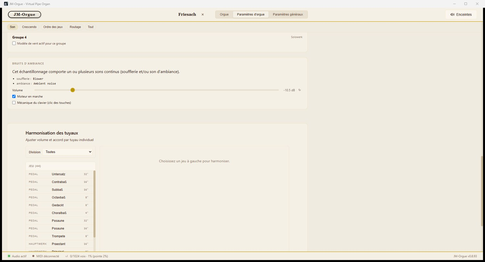
En bas se trouve l’harmonisation des tuyaux : choisissez un jeu à gauche et réglez le volume et l’accord de chaque tuyau individuellement.
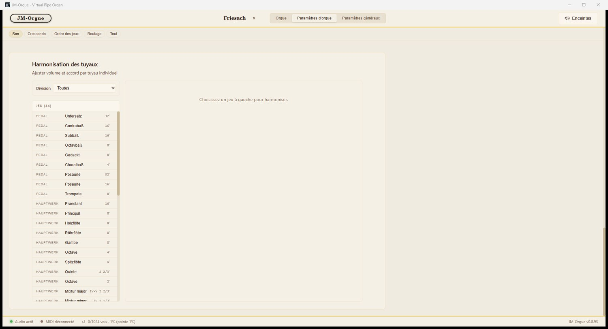
Crescendo
Le crescendo général tire pas à pas davantage de jeux lorsque vous déplacez une pédale de crescendo. Vous décidez vous-même quels jeux entrent dans quel cran :
- Activé met le crescendo en marche ; Étapes est le nombre de crans.
- Remplissage auto propose un réglage adapté aux jeux de cet orgue. Avec les options en dessous, vous décidez si les accouplements sont inclus, si les jeux de couleur (sesquialtera, cornet, tierce), les anches de 32′ et les chamades sont inclus et si les accouplements d’octave n’interviennent qu’au tutti. Effacer vide la matrice.
- Dans la matrice, un clic sur une case tire ou rentre ce jeu dans ce cran ; Maj+clic l’applique à tous les crans à partir de celui-ci.
- Apprendre pédale associe votre pédale de crescendo ; en bas, vous pouvez aussi saisir à la main le canal et le numéro de CC.
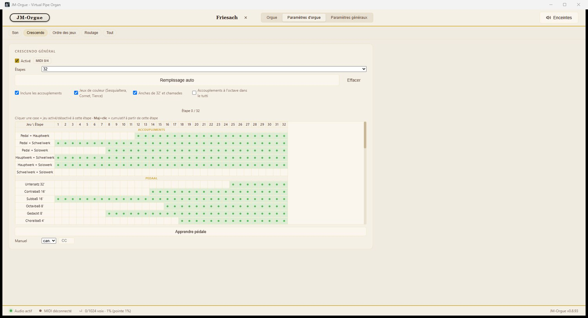
Ordre des jeux
Vous déterminez ici l’ordre des jeux dans chaque clavier. Faites glisser un jeu par sa poignée pour le déplacer. Pour chaque jeu, vous voyez la hauteur et la famille (la couleur du nom). Avec les flèches, vous modifiez l’ordre pas à pas, et Réinitialiser rétablit l’ordre du jeu d’échantillons.
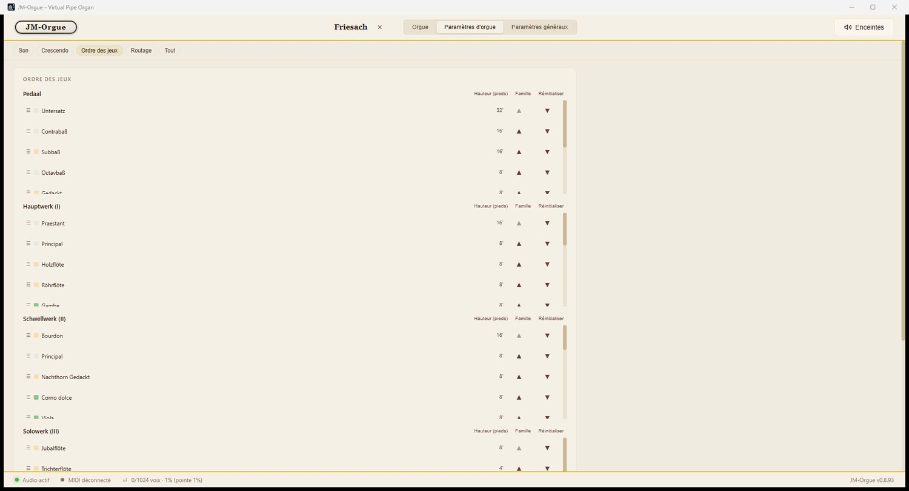
Routage
Cet onglet relie votre orgue à votre matériel. En haut, il y a un bloc par clavier :
- Canal : le canal MIDI écouté par le clavier (« Tous » = tous les canaux). Apprendre détermine le canal et la plage en jouant d’abord la touche la plus grave, puis la plus aiguë.
- Transp : transposer en demi-tons. Plage : touche la plus grave et la plus aiguë. Octave courte : pour les jeux à octave de basse courte.
- Boîte expressive : active la boîte expressive de ce clavier ; des boutons apparaissent alors pour apprendre la pédale, régler le volume minimal et la fréquence de coupure d’une boîte fermée.
- Alimentation en air : à quel groupe de vent le clavier appartient.
- Panoramique et Sorties : la place dans l’image stéréo et les canaux de sortie de votre interface audio sur lesquels le clavier sonne. Deux sorties consécutives forment une paire stéréo ; un canal isolé sonne en mono.
- C/Cis : répartit les tuyaux sur deux côtés, comme les sommiers C et Cis d’un vrai orgue ; la force et la décroissance globales se règlent dans le bloc au-dessus.
- Trémulant LFO : si le jeu n’a pas de vrais enregistrements de trémulant, le programme calcule le trémulant. Vous règlez ici la vitesse, l’amplitude et la hauteur.
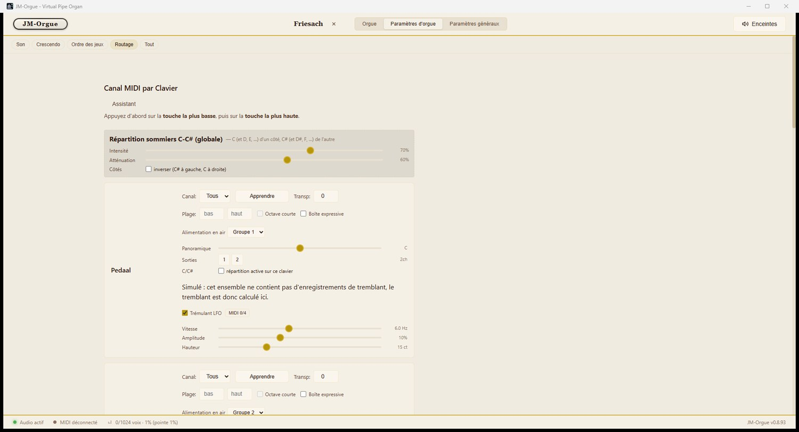
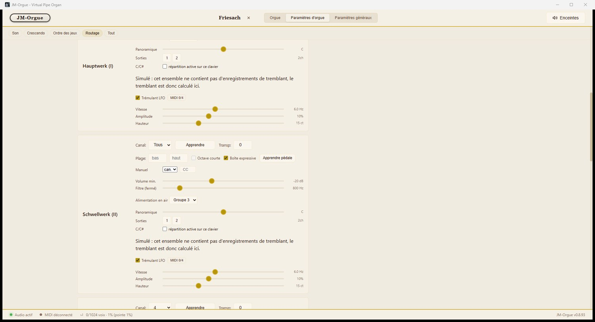
En dessous se trouve Sortie audio des sons d’ambiance : pour chaque type de son, vous choisissez les sorties utilisées. Soufflerie est le bruit de soufflerie ; Ambiance et clics de mécanique concerne le bruit de la salle et les clics des jeux et des touches ; les jeux avec des jeux d’effet (cymbalestern, rossignol et autres) et du bruit de trémulant ont chacun leur propre ligne. Cela importe surtout avec plus de deux sorties, lorsque les claviers sonnent sur d’autres canaux que 1–2 par défaut. Juste en dessous :
- Clavier continu : les touches hors de l’étendue enregistrée d’un jeu jouent le tuyau le plus proche, décalé à la bonne hauteur, au lieu de rester muettes. Un clavier de 61 touches continue ainsi à jouer sur un jeu qui a moins de notes.
- Accorder automatiquement les tuyaux : réaccorde les tuyaux d’après leur hauteur mesurée, en conservant les jeux volontairement ondulants. Activé par défaut.
- Correction de hauteur : l’ensemble plus haut ou plus bas en cents (Zéro la remet à zéro).
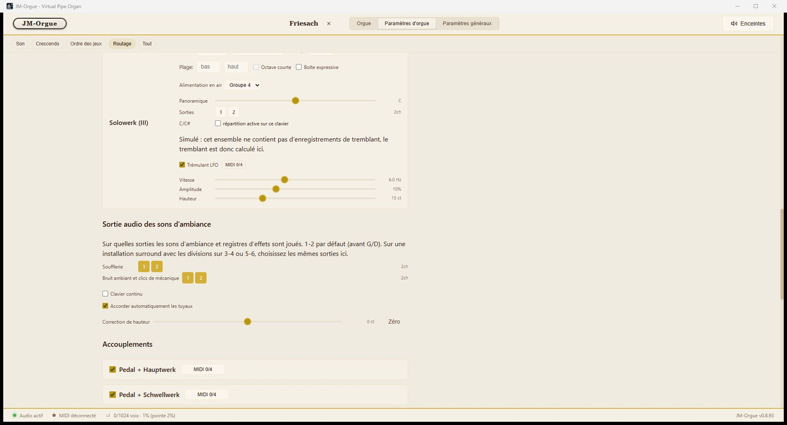
Plus bas se trouvent les Accouplements (activer ou désactiver, avec un bouton MIDI par accouplement) et Accouplements en plus : des accouplements qui ne sont pas dans le jeu d’échantillons mais découlent de la disposition des claviers ; cochez ce que vous voulez et ils apparaissent aussitôt dans la barre des accouplements. Affectations MIDI est une liste unique de toutes les affectations MIDI de cet orgue, que vous pouvez y modifier, supprimer ou ajouter à la main. En bas, Ouvrir .mid fait jouer un fichier MIDI par l’orgue.
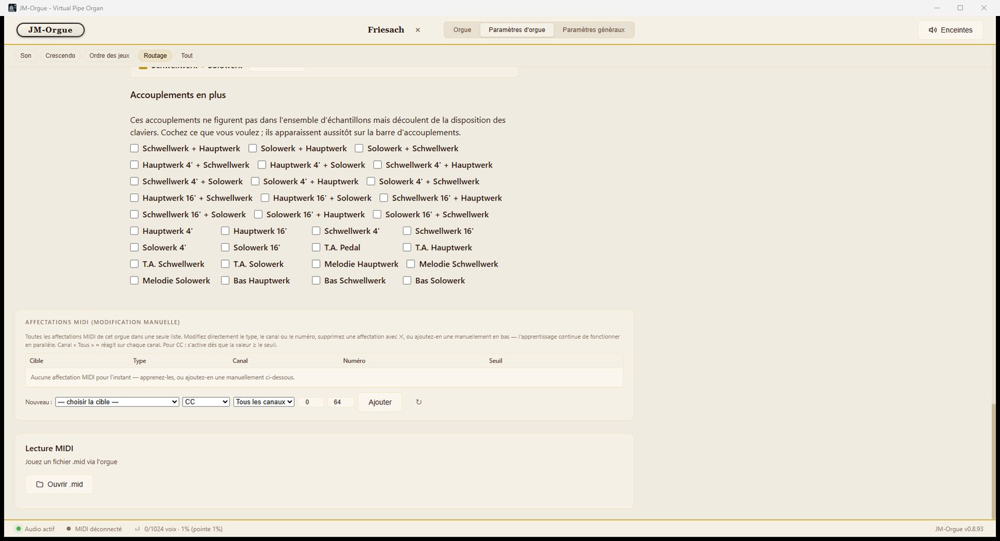
8. Paramètres généraux
Ces réglages valent pour l’ensemble du programme. Les onglets sont Sortie audio, Correction d’échantillons, MIDI, Apprendre les boutons, Affichage et Mise à jour et retour.
Sortie audio
- Pilote audio et appareil : pour la latence la plus faible, choisissez ASIO (par exemple le pilote de votre interface audio) ; WASAPI fonctionne avec la carte son Windows standard. La ligne « Actuel » en dessous indique ce qui joue en ce moment.
- Signal de test : cliquez sur un numéro de canal pour envoyer le son à cette sortie précise, afin d’entendre quelle fiche correspond à quelle enceinte.
- Polyphonie et Cœurs de calcul pour le mixage : le nombre maximal de tuyaux sonnant en même temps et le nombre de cœurs de processeur sur lesquels le mixage est réparti. Le choix par défaut convient à votre ordinateur ; l’indicateur de charge montre l’effet.
- Lire les échantillons stéréo en stéréo : conserve l’image stéréo des enregistrements stéréo. Désactivé, c’est un mixage mono qui divise par deux l’usage de mémoire de ces jeux.
- Tampon de départ par enregistrement (nouveau dans cette version) : la part de chaque enregistrement de tuyau qui est tout de suite en mémoire : 200 ms, 300 ms, 500 ms, 1 s ou 2 s (par défaut). Un tampon plus court économise beaucoup de mémoire et de temps de chargement ; le reste est chargé pendant que vous jouez. Le choix prend effet après le rechargement de l’orgue.
- Taille de buffer : plus petit signifie moins de latence mais plus de charge pour votre ordinateur. Appliquer active le choix.
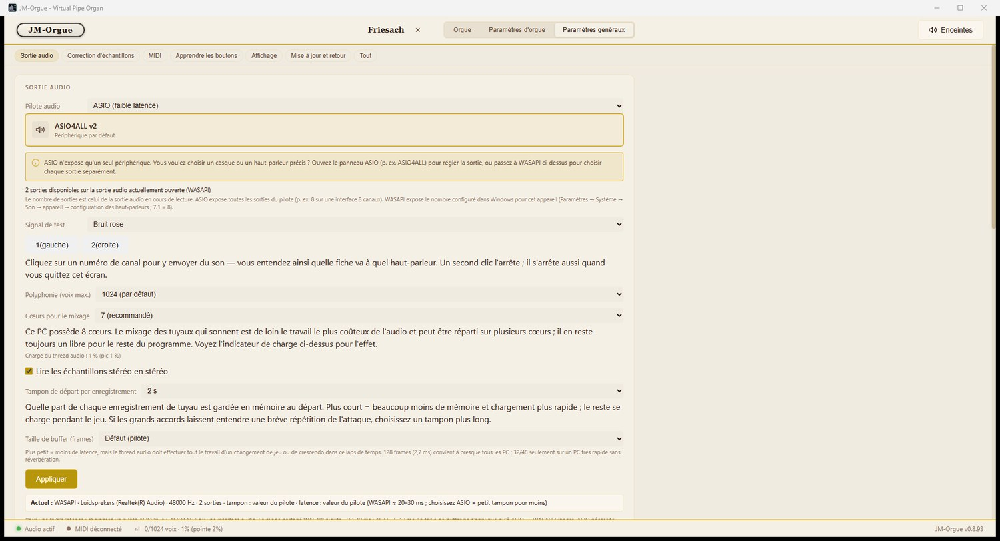
Les profils de sortie mémorisent deux réglages de sortie complets, par exemple des enceintes via ASIO et un casque via WASAPI, y compris le choix des canaux par clavier. Choisissez la sortie voulue, cliquez sur Enregistrer la sélection actuelle pour Enceintes ou Casque, puis basculez avec le bouton Enceintes en haut à droite ou avec un bouton MIDI appris. Le profil actif est marqué.
La correction pour casque ou enceintes applique une correction de timbre à la sortie elle-même (et non à l’orgue) : choisissez pour quel profil elle vaut, activez-la et choisissez un préréglage dans la liste AutoEq, ou importez ou exportez une correction personnelle.
En dessous se trouvent les options pour démarrer automatiquement le programme avec Windows, charger automatiquement le dernier orgue ouvert, laisser la croix d’un écran supplémentaire fermer tout le logiciel et restaurer la dernière registration. L’archive MIDI automatique enregistre en arrière-plan tout ce que vous jouez, sous forme d’un fichier .mid par session : elle démarre à la première note et s’arrête après un silence.
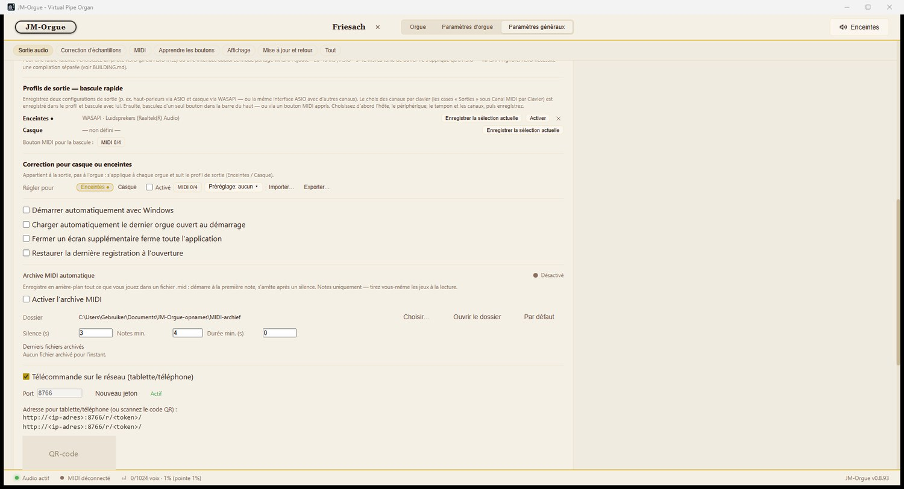
Avec la télécommande sur le réseau (tablette/téléphone), vous commandez l’orgue depuis une tablette ou un téléphone du même réseau wi-fi. Le programme affiche une adresse et un code QR à scanner, et vous choisissez quels éléments et quels claviers apparaissent sur l’écran externe. La première fois, le pare-feu Windows demande si JM-Orgue peut recevoir des connexions : choisissez « Autoriser l’accès » pour les réseaux privés.
En bas se trouve le taux d’échantillonnage. Il suit la carte son elle-même : sous ASIO, vous le réglez dans le panneau du pilote, sous WASAPI dans les paramètres sonores de Windows.
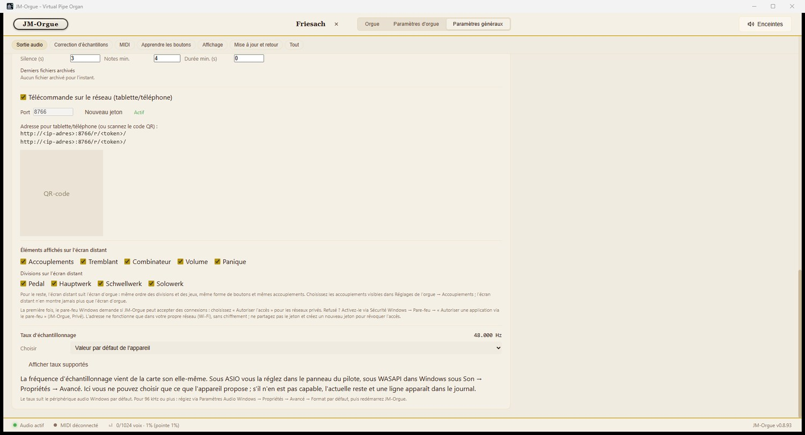
Correction d’échantillons
Deux outils pour nettoyer les échantillons de l’orgue chargé. Silence initial trouve et coupe le silence au début des échantillons (vous réglez vous-même le seuil de silence en dB et l’amorce à conserver) ; Boucles trouve une bonne boucle de maintien, intègre un fondu enchaîné pour une transition sans coupure et écrit les points de boucle dans le fichier, avec l’option de ne le faire que pour les fichiers sans boucle. Avec Analyser, vous regardez d’abord ce qui changerait. Les originaux sont d’abord conservés dans un dossier _backup avant que les fichiers soient écrasés.
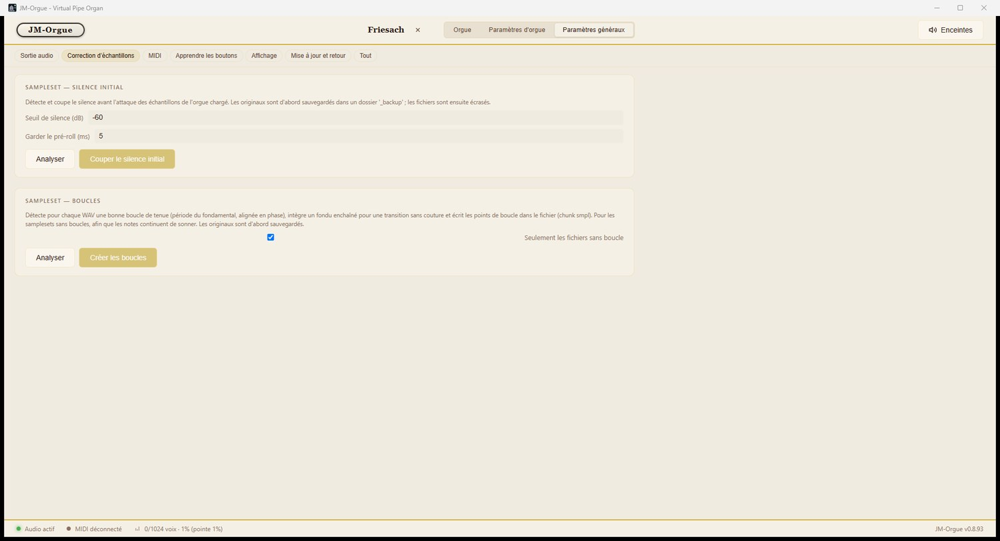
MIDI
Entrée MIDI montre les appareils MIDI connectés (avec Actualiser les périphériques, vous cherchez à nouveau) ; sous MIDI Bluetooth, vous cherchez les appareils sans fil avec Analyser. Le retour d’information (sortie MIDI) fait s’allumer votre console selon la registration : choisissez le protocole (voyants de jeux via Note On/Off, un afficheur de texte Hauptwerk ou une console Johannus/Content), la sortie MIDI, le canal et la note de base. Chaque jeu reçoit alors automatiquement un numéro de note à partir de la note de base, ou vous apprenez le vrai bouton de la console jeu par jeu avec Apprendre par jeu….
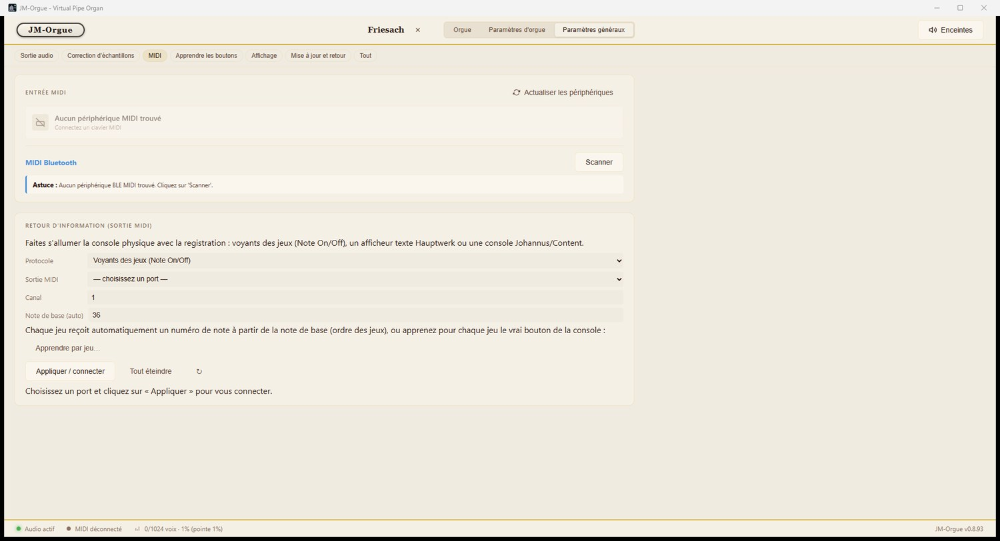
Apprendre les boutons
Ici, vous apprenez les boutons fixes de la console (pistons) : accordeur, SET, pas de combinaison, niveaux de mémoire et arrêt de l’ordinateur. Les boutons chiffrés 0–9 s’apprennent sur la barre du setzer elle-même (clic droit ou maintien de 3 secondes).
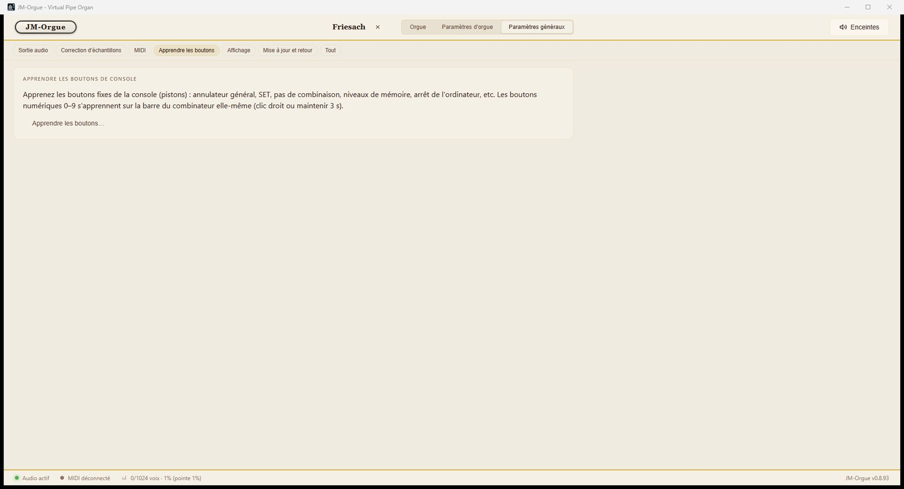
Affichage
Choisissez la langue du programme (Nederlands, English, Français, Deutsch, Polski, Italiano et Español) et l’apparence : cinq préréglages de couleurs prêts à l’emploi (Base, Bois classique, Moderne minimaliste, Nuit et Soir), ou composez vos propres couleurs, donnez-leur un nom et exportez-les. En dessous, vous réglez la police, la taille et l’épaisseur du texte des jeux, ainsi que l’arrière-plan.
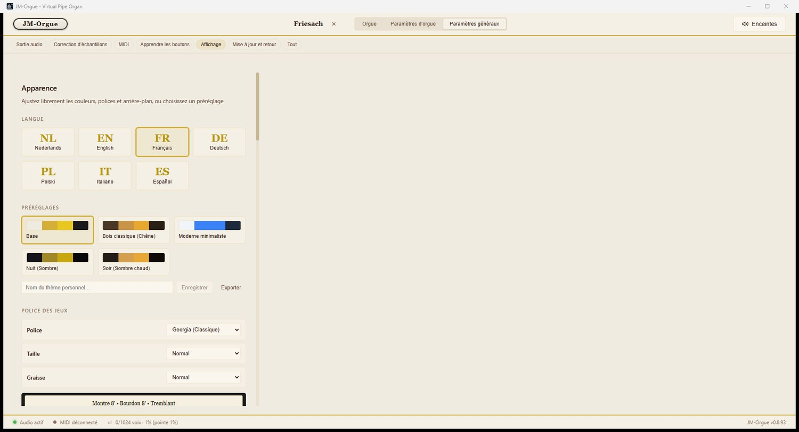
Mise à jour et retour
Vous y trouvez le numéro de version, les mentions des préréglages de casque et des données d’enceintes utilisés, ainsi que les boutons Envoyer un retour…, Via GitHub (issues) et Vérifier les mises à jour.
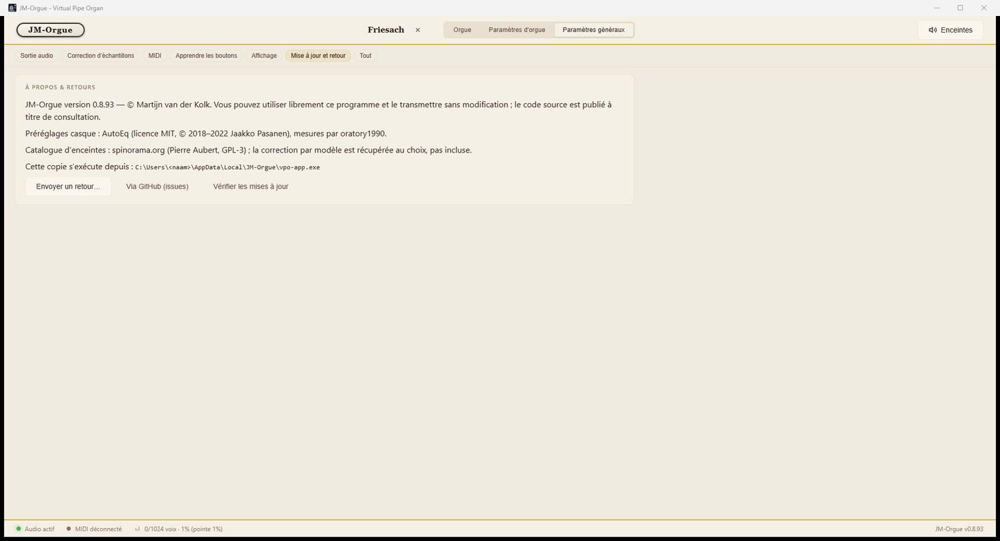
9. Configuration acoustique d’un jeu
Une définition d’orgue peut renvoyer à un fichier supplémentaire, JM-ACOUSTICS.json, qui décrit l’acoustique du jeu : des boîtes expressives rattachées à un rang plutôt qu’à un clavier, des réponses impulsionnelles pour la réverbération, des routes de mixage et des sorties. Si votre jeu a un tel fichier, vous le reconnaissez à un bloc supplémentaire dans Paramètres d’orgue → Son.
- Le programme lit le fichier et le vérifie : la taille du fichier, l’exactitude de toutes les références, le fait que les chemins restent dans le dossier de l’orgue et que les liaisons de tuyaux correspondent à la définition chargée. En cas de problème, l’orgue joue simplement avec la définition ordinaire et le bloc indique pourquoi la configuration n’a pas été chargée.
- Boîtes expressives par rang : les rangs que le fichier place dans une boîte reçoivent leur propre boîte expressive et leur propre pédale, indépendamment du clavier sur lequel ils sont joués. Un rang utilisé par deux claviers suit ainsi toujours la même boîte. Vous apprenez la pédale sous Routage (Apprendre pédale) ou dans l’assistant.
- Les réponses impulsionnelles du jeu figurent sous le bloc, avec canaux et durée. Avec Utiliser comme réverbération, vous en reprenez une comme réverbération par convolution. Le rôle des canaux dans de tels enregistrements n’est pas défini ; le programme utilise les deux premiers comme paire stéréo.
- Les routes de mixage, bus de sortie et transitions d’effets du fichier ne sont pour l’instant pas appliqués automatiquement ; la définition ordinaire reste prioritaire.
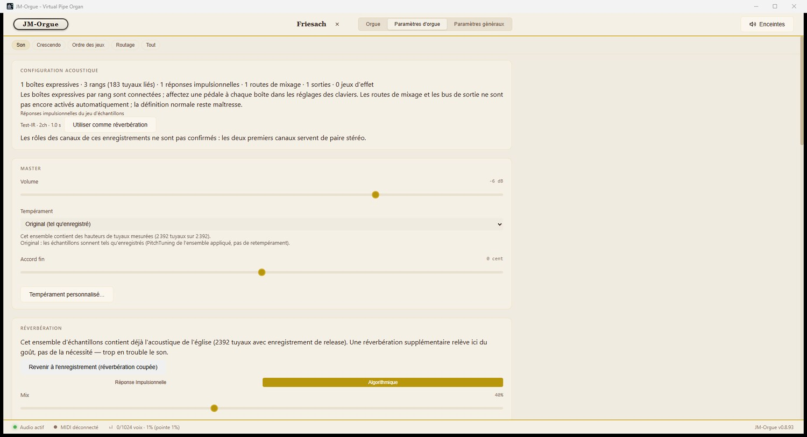
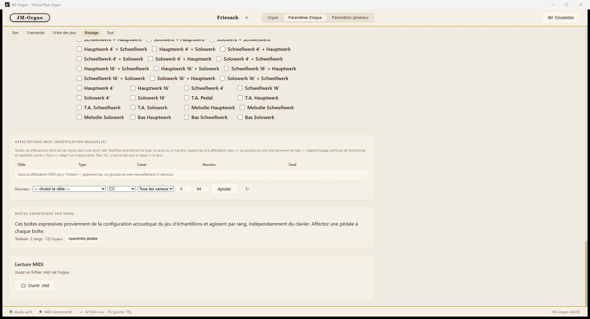
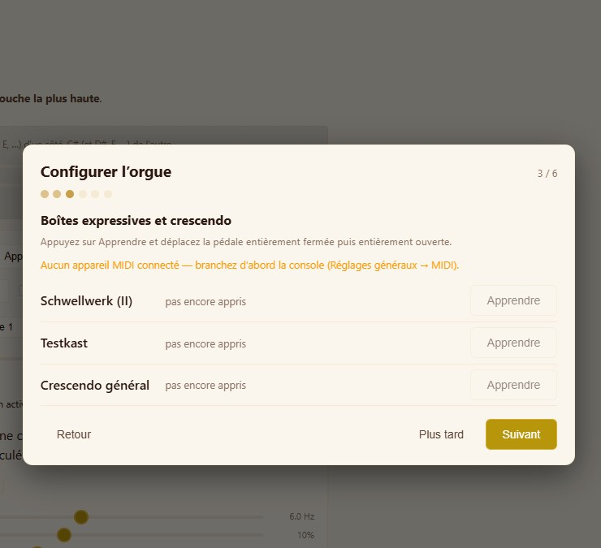
10. Raccourcis clavier et conseils
| Touche | Fonction |
|---|---|
| F1 F2 F3 | Orgue, Paramètres d’orgue et Paramètres généraux. |
| F11 | Plein écran (mode console) activé ou désactivé. |
| Échap | Quitter le plein écran. |
| Clic droit ou 3 s de pression | Sur un bouton de la barre du setzer : associer ce bouton à un bouton de la console (apprentissage MIDI). |
| Double-clic sur le volume | Volume principal remis à la valeur par défaut. |
| Carte maintenue 3 s | Dans la bibliothèque : chercher de nouveau la photo de cette carte. |
- Tous les réglages sont enregistrés avec chaque orgue, y compris quand vous fermez l’orgue ou quittez le programme.
- Pour une console fixe : activez Démarrer automatiquement avec Windows et Charger automatiquement le dernier orgue ouvert, et utilisez le mode console.
- Avec plus de deux sorties : choisissez les sorties par clavier sous Routage, puis les mêmes sorties pour les sons d’ambiance.
11. Dépannage et retours
| Problème | Ce que vous pouvez essayer |
|---|---|
| Pas de son | La soufflerie est-elle en marche ? Est-il indiqué « Audio actif » en bas ? Le bon appareil est-il réglé sous Sortie audio, et les sorties par clavier correspondent-elles à votre interface audio ? Utilisez le signal de test pour entendre les sorties. |
| Le clavier ne réagit pas | En bas, il est indiqué « MIDI non connecté » tant qu’aucun appareil MIDI n’est présent. Vérifiez Paramètres généraux → MIDI et le canal MIDI par clavier sous Routage. |
| L’orgue sonne faux | Vérifiez que Accorder automatiquement les tuyaux est activé, et choisissez sous Son le tempérament « Original » ou celui que vous souhaitez. |
| Craquements ou saccades | Réduisez la polyphonie, tirez moins de jeux, coupez la réverbération ou choisissez un buffer plus grand. Un tampon de départ court demande un disque rapide ; sinon choisissez-en un plus long. |
| Pas assez de mémoire | Choisissez un tampon de départ plus court, désactivez les échantillons stéréo ou les positions d’écoute que vous n’utilisez pas. |
| Les sons d’ambiance ou les jeux d’effet ne s’entendent pas sur la bonne enceinte | Sous Routage, dans « Sortie audio des sons d’ambiance », choisissez les mêmes sorties que pour les claviers. |
Envoyer un retour… (Paramètres généraux → Mise à jour et retour) crée un message avec votre signalement et les fichiers journaux des dernières sessions, afin que le développeur puisse voir ce qui s’est passé. Vous pouvez aussi publier votre signalement sur la page du projet sur GitHub.